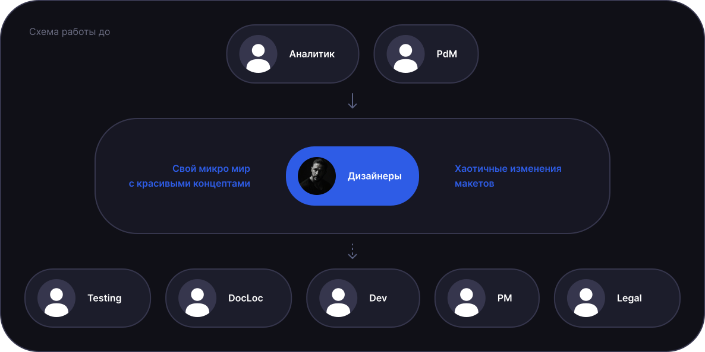
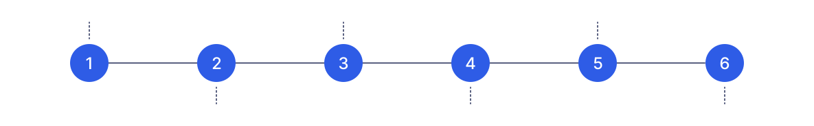
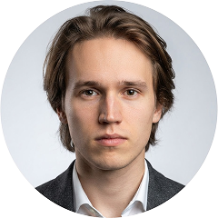

Исходная ситуация
Дизайн и разработка
работали разрозненно
Когда я начал координировать дизайнеров, выяснилось, что у команды нет общего процесса работы с разработкой.
Дизайнеры работали в общем файле Figma, где со временем накапливались устаревшие экраны и изменения, от которых отказались уже в процессе разработки.
Найти актуальные решения становилось всё сложнее.
Задачи часто приходили от аналитика с уже согласованным решением.
Дизайнеры подключались после обсуждения вариантов и не всегда могли повлиять на итоговое решение.

Начало изменений
Наладил работу команды
и дизайн-ревью
Организовал еженедельные встречи с дизайнерами, PdM и аналитиком.
На них обсуждали новые задачи, текущие результаты и загрузку команды.
Проводил встречи 1:1 с дизайнерами.
Разбирали работу, обсуждали блокеры и дальнейшие шаги.
Отдельно занимался адаптацией стажёра.
Начинали с пробных задач, вместе разбирали результаты. Не принимал решения за него, помогал разобраться и отвечать за собственный выбор.
Работа с макетами и передача в разработку
Сделал изменения
в макетах понятными
После обратной связи от команды пересмотрел структуру Figma.
Вместо одного общего файла разделил макеты по приложениям и ввёл мастер-файлы с привязкой к итерациям.
В каждом мастер-файле оставались только изменения, относящиеся к конкретному релизу.
Добавил единые правила нумерации экранов, обязательные подписи переходов, комментарии, бейджи изменений и changelog прямо в макетах.
Для анимаций стали указывать параметры и тайминги.
Разработчикам и тестировщикам стало проще находить актуальные решения.
На дизайн-ревью сборок стало видно, что команда реализует именно последние изменения. Если находили расхождение, заводили баг или change request.

Планирование релизов
Подключил дизайн
к подготовке релизов
Раньше дизайнеры часто получали уже согласованные решения, которые оставалось только оформить.
Сейчас я подключаюсь к планированию следующего релиза, когда у PdM появляется черновой план.
Для задач, где нужен дизайн, сначала готовим концептуальные макеты и передаём их разработчикам на HLE — предварительную оценку трудозатрат.
К началу разработки детализируем сценарии и состояния интерфейса.
Так у команды появилась возможность обсуждать решения до начала реализации.
При этом некоторые задачи по-прежнему приходят с уже согласованным вариантом.

Влияние на продукт
Исследования помогли сформировать UX-бэклог
В планирование релизов стали включать и UX-проблемы, которые мы находили в исследованиях. Я подготовил программу исследования и скринер, сопровождал поиск респондентов, проводил глубинные интервью и юзабилити-тесты.
По итогам выявили 23 UX-проблемы. Я собрал их в Confluence, сгруппировал по типам и выставил приоритеты со стороны дизайна. Затем PdM и аналитик добавили свои оценки.
При выборе задач учитывали частоту использования сценария, ожидаемый эффект и стоимость реализации.
23
Выявленные
UX-проблемы
≈70%
Исправлено
и проверено
Исправления отслеживал на дизайн-ревью сборок. Повторный юзабилити-тест помог проверить результат. Остальные проблемы остались в UX-долге.
Пример работы с разработкой
Баланс между плавным UI и реальными возможностями
При работе над переключением экранов в Launcher столкнулись с ограничениями существующего кода. Хотелось добиться плавной анимации, но переписывать механизм с нуля не было ресурсов.
Вместе с разработчиком разбирались в параметрах, меняли настройки и проверяли результат на сборках. В итоге нашли вариант, который устроил всех.

Договорились вернуться к анимации после перехода на другую кодовую базу.
Результаты и выводы
Что изменилось
Теперь мы обсуждаем решения с разработкой до начала реализации, а после проверяем сборки. Разработчики и тестировщики стали понимать, какой макет актуален.
Дизайнеры стали самостоятельнее и лучше понимали, как вести задачу от обсуждения до передачи в разработку.
У разработчиков и тестировщиков стало меньше вопросов об актуальности макетов и изменениях в интерфейсе.
Дизайн стал участвовать в планировании релизов и предварительной оценке задач.
Из 23 проблем, найденных в исследованиях, исправили около 70%. Исправления проверяли на сборках и повторных юзабилити-тестах.

«Ты эмпатичен, ты слушаешь, говоришь, ругаешь когда надо, даешь расти»